第9世代（パルデア地方）ポケモンの英語名一覧
全114匹の英語名と由来
第9世代（パルデア地方）のポケモン114匹の英語名を、図鑑番号順にまとめました。名前を押すと、英語版図鑑の説明文と日本語訳、英語名の由来が見られます。
| No. | 日本語名 | 英語名 | 英語名の由来 |
|---|---|---|---|
| 906 | Sprigatito | sprig（小枝）とgatito（スペイン語で「子猫」） | |
| 907 | 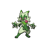 ニャローテ | Floragato | flora（植物）、flor（スペイン語で「花」）とgato（スペイン語で「猫」） |
| 908 | Meowscarada | meow（ニャー）とmascarada（スペイン語で「仮面舞踏会」） | |
| 909 | Fuecoco | fuego（スペイン語で「火」）とcocodrilo（スペイン語で「ワニ」） | |
| 910 | Crocalor | crocodile（ワニ）とcalor（スペイン語で「熱」） | |
| 912 | Quaxly | quack（ガーガー）、wax（ろう）とduckling（子ガモ） | |
| 913 | 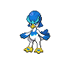 ウェルカモ | Quaxwell | quack（ガーガー）、aqua（ラテン語で「水」）、wax（ろう）とwell（井戸） |
| 914 | Quaquaval | quá-quá（ポルトガル語の「ガーガー」）、aqua（ラテン語で「水」）とcarnaval（スペイン語で「カーニバル」… | |
| 915 | 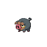 グルトン | Lechonk | lechón（スペイン語で「子ブタ」）とchonk（まるまる太った） |
| 916 | Oinkologne | oink（ブーブー）とEau de Cologne（オーデコロン） | |
| 917 | 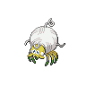 タマンチュラ | Tarountula | tarantula（タランチュラ）とround（まるい） |
| 918 | Spidops | spider（クモ）、spy（スパイ）、ops（作戦）とDeinopis（メダマグモ属） | |
| 919 | Nymble | Nymph（妖精ニンフ）とnimble（すばしこい） | |
| 920 | 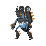 エクスレッグ | Lokix | locust（バッタ）、kicks（キック）、crickets（コオロギ）とlow kick（ローキックのだじゃれ） |
| 921 | 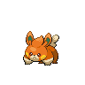 パモ | Pawmi | paw（肉球のある足）、palm（ヤシ）とmini（小さい） |
| 922 | Pawmo | Pawmi（パモ）、marmot（マーモット）とdynamo（発電機） | |
| 923 | Pawmot | Pawmi（パモ）、Pawmo（パモット）とmarmot（マーモット） | |
| 924 | Tandemaus | tandem（二人乗り）とMaus（ドイツ語で「ネズミ」） | |
| 925 | Maushold | Maus（ドイツ語で「ネズミ」）とhousehold（家庭） | |
| 926 | Fidough | Fido（犬によく付けられる名前）、filo（パイ生地）とdough（パン生地） | |
| 927 | 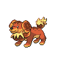 バウッツェル | Dachsbun | dachshund（ダックスフント）とbun（まるいパン、おだんご髪） |
| 928 | Smoliv | small（小さい）、smol（ちっちゃい）とolive（オリーブ） | |
| 929 | Dolliv | doll（人形）とolive（オリーブ） | |
| 930 | Arboliva | vines（つる）がもとになっていると考えられている | |
| 931 | Squawkabilly | squawk（ギャーギャー鳴く）、bill（くちばし）とrockabilly（ロカビリー） | |
| 932 | 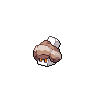 コジオ | Nacli | フランス語の名前は「Selutin」で、sel（塩）、lutin（いたずら妖精）、goblin)（小鬼）から作られている |
| 933 | 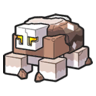 ジオヅム | Naclstack | フランス語の名前は「Amassel」で、amas（積み重ね）、sel（塩）から作られている |
| 934 | Garganacl | gargantuan（巨大な）がもとになっていると考えられている | |
| 935 | 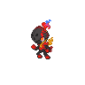 カルボウ | Charcadet | char（焦がす）、charcoal（木炭）とcadet（士官候補生） |
| 936 | Armarouge | arma（ラテン語で「武器」）、armadura（スペイン語で「よろい」）、armatura（イタリア語で「よろい」）と… | |
| 937 | Ceruledge | cerulean（空色の）、cruel（残酷な）とedge（刃） | |
| 938 | Tadbulb | tadpole（オタマジャクシ）とlight bulb（電球） | |
| 939 | Bellibolt | belly（お腹）とbolt（稲妻） | |
| 940 | Wattrel | watt（ワット（電力の単位））とpetrel（ミズナギドリ） | |
| 941 | Kilowattrel | kilowatt（キロワット）とpetrel（ミズナギドリ） | |
| 942 | 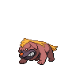 オラチフ | Maschiff | mastiff（マスティフ犬）とmischief（いたずら） |
| 943 | Mabosstiff | mafia（マフィア）、mob（群れ）、boss（ボス）とmastiff（マスティフ犬） | |
| 944 | 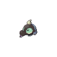 シルシュルー | Shroodle | shrew（トガリネズミ）、shrewd（抜け目ない）とdoodle（落書き） |
| 945 | Grafaiai | graffiti（落書き）とaye-aye（アイアイ） | |
| 946 | 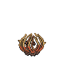 アノクサ | Bramblin | bramble（いばら）、rambling（とりとめのない）、goblin（小鬼ゴブリン）とgremlin（いたずら妖精… |
| 947 | 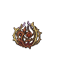 アノホラグサ | Brambleghast | bramble（いばら）、ghastly（ぞっとする）、ghast（幽霊）とaghast（ぎょっとした） |
| 948 | Toedscool | toadstool（毒キノコ）、toed（指のある）とTentacool（メノクラゲ） | |
| 949 | 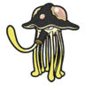 リククラゲ | Toedscruel | toadstool（毒キノコ）、toed（指のある）とTentacruel（ドククラゲ） |
| 950 | Klawf | claw（かぎ爪）とcliff（がけ） | |
| 951 | Capsakid | capsaicin（カプサイシン）、Capsicum（トウガラシ属）、kappa（河童）とkid（子ども） | |
| 952 | 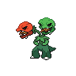 スコヴィラン | Scovillain | Scoville（辛さの単位スコヴィル）とvillain（悪役） |
| 953 | 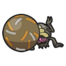 シガロコ | Rellor | フランス語の名前は「Léboulérou」で、roulé-boulé（転がる）、boue（どろ）から作られている |
| 954 | 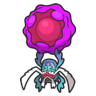 ベラカス | Rabsca | scarab（スカラベ（フンコロガシ））がもとになっていると考えられている |
| 955 | Flittle | flitter（ひらひら飛ぶ）とlittle（小さい） | |
| 956 | Espathra | ESP（超能力）、telepath（テレパシーを使う者）とCleopatra（クレオパトラ） | |
| 957 | 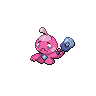 カヌチャン | Tinkatink | tinker（いじくる）、pink（ピンク）とtink（チン（小さな金属音）） |
| 958 | 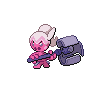 ナカヌチャン | Tinkatuff | tinker（いじくる）とtough（たくましい） |
| 959 | 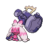 デカヌチャン | Tinkaton | tinker（いじくる）、ton（トン）とgigaton（ギガトン） |
| 960 | Wiglett | wiggle（くねくね動く）、water（水）、white（白）とDiglett（ディグダ） | |
| 961 | Wugtrio | Wiglett（ウミディグダ）、water（水）とDugtrio（ダグトリオ） | |
| 962 | Bombirdier | bombardier（爆撃手）とbird（鳥） | |
| 963 | 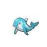 ナミイルカ | Finizen | fin（ひれ）、delfín（スペイン語で「イルカ」）、citizen（市民）とdenizen（住人） |
| 964 | 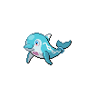 イルカマン | Palafin | paladin（聖騎士）、pal（仲間）、fin（ひれ）とdelfín（スペイン語で「イルカ」） |
| 965 | Varoom | vroom（ブルン（エンジン音））がもとになっていると考えられている | |
| 966 | Revavroom | rev（エンジンをふかす）とvroom（ブルン（エンジン音）） | |
| 967 | 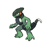 モトトカゲ | Cyclizar | cycle（自転車）とlizard（トカゲ） |
| 968 | Orthworm | ore（鉱石）、ortho-（「まっすぐな」を表す接頭語）、orthoclase（正長石）とearthworm（ミミズ） | |
| 969 | 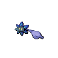 キラーメ | Glimmet | glimmer（かすかな光）、-et（「小さい〜」を表す語尾）とemit（放つ） |
| 970 | 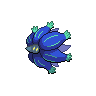 キラフロル | Glimmora | glimmer（かすかな光）とflora（植物） |
| 971 | Greavard | graveyard（墓地）とgrieve（悲しむ） | |
| 972 | Houndstone | hound（猟犬）とheadstone（墓石） | |
| 973 | Flamigo | flamingo（フラミンゴ）とamigo（スペイン語で「友だち」） | |
| 974 | 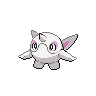 アルクジラ | Cetoddle | Cetacea（クジラ目）、Cetus（ギリシャ神話の海の怪物ケートス）、toddle（よちよち歩く）とtoddler（… |
| 975 | 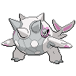 ハルクジラ | Cetitan | Cetacea（クジラ目）、Cetus（ギリシャ神話の海の怪物ケートス）とtitan（巨人） |
| 976 | 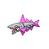 ミガルーサ | Veluza | veloz（スペイン語で「速い」）とmerluza（スペイン語で「タラ」） |
| 977 | Dondozo | don（首領）がもとになっていると考えられている | |
| 978 | Tatsugiri | フランス語の名前は「Nigirigon」で、寿司、dragon（ドラゴン）から作られている | |
| 979 | 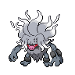 コノヨザル | Annihilape | annihilate（全滅させる）とape（類人猿） |
| 980 | Clodsire | clod（土のかたまり）、sire（殿）、Siren（ギリシャ神話のセイレーン）とQuagsire（ヌオー） | |
| 981 | Farigiraf | ||
| 982 | Dudunsparce | redundant（余計な）がもとになっていると考えられている | |
| 983 | Kingambit | king（王）とgambit（先手の策） | |
| 984 | 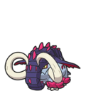 イダイナキバ | Great Tusk | フランス語の名前は「Fort-Ivoire」で、fort（強い）、ivoire（象牙）から作られている |
| 985 | 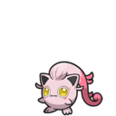 サケブシッポ | Scream Tail | フランス語の名前は「Hurle-Queue」で、hurler（叫ぶ）、queue（しっぽ）から作られている |
| 986 | 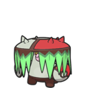 アラブルタケ | Brute Bonnet | フランス語の名前は「Fongus-Furie」で、fongus（菌類）、furie（激しい怒り）から作られている |
| 987 | 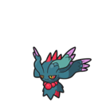 ハバタクカミ | Flutter Mane | フランス語の名前は「Flotte-Mèche」で、flotter（ひらひら舞う）、mèche（髪の毛）から作られている |
| 988 | 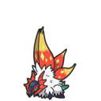 チヲハウハネ | Slither Wing | フランス語の名前は「Rampe-Ailes」で、ramper（にょろにょろはう）、ailes（翼）から作られている |
| 989 | Sandy Shocks | フランス語の名前は「Pelage-Sablé」で、pelage（毛皮）、sablé（砂の）から作られている | |
| 990 | 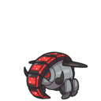 テツノワダチ | Iron Treads | ドイツ語の名前は「Eisenrad」で、Eisen（鉄）、Rad（車輪）から作られている |
| 991 | Iron Bundle | ドイツ語の名前は「Eisenbündel」で、Eisen（鉄）、Bündel（束）から作られている | |
| 992 | Iron Hands | ドイツ語の名前は「Eisenhand」で、Eisen（鉄）、Hand（手）から作られている | |
| 993 | Iron Jugulis | jugulum（ラテン語で「のど」）、throat（のど）とneck（首） | |
| 994 | 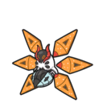 テツノドクガ | Iron Moth | ドイツ語の名前は「Eisenfalter」で、Eisen（鉄）、Falter（チョウやガの仲間）から作られている |
| 995 | Iron Thorns | ドイツ語の名前は「Eisendorn」で、Eisen（鉄）、Dorn（とげ）から作られている | |
| 996 | 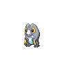 セビエ | Frigibax | frigid（極寒の）、back（背中）とaxe（斧） |
| 997 | Arctibax | arctic（北極の）、back（背中）とaxe（斧） | |
| 998 | Baxcalibur | back（背中）とExcalibur（伝説の剣エクスカリバー） | |
| 999 | 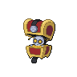 コレクレー | Gimmighoul | gimme（ちょうだい）、gimmick（しかけ）、mimic（まねる）とghoul（悪鬼） |
| 1000 | Gholdengo | ghoul（悪鬼）、ghost（ゴースト）とgolden（金色の） | |
| 1005 | 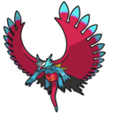 トドロクツキ | Roaring Moon | フランス語の名前は「Rugit-Lune」で、rugir（ほえる）、lune（月）から作られている |
| 1006 | Iron Valiant | ドイツ語の名前は「Eisenkrieger」で、Eisen（鉄）、Krieger（戦士）から作られている | |
| 1007 | 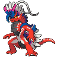 コライドン | Koraidon | dragon（ドラゴン）、don（首領）と-don（「〜の歯」を表す語尾） |
| 1008 | 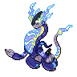 ミライドン | Miraidon | dragon（ドラゴン）、don（首領）と-don（「〜の歯」を表す語尾） |
| 1009 | 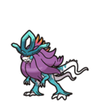 ウネルミナモ | Walking Wake | フランス語の名前は「Serpente-Eau」で、serpenter（くねくね進む）、巻く、eau（水）から作られている |
| 1010 | Iron Leaves | ドイツ語の名前は「Eisenblatt」で、Eisen（鉄）、Blatt（葉）から作られている | |
| 1011 | 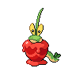 カミッチュ | Dipplin | di-（「2つの」を表す接頭語）、dip（ひたす）とApplin（カジッチュ） |
| 1012 | 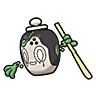 チャデス | Poltchageist | poltergeist（ポルターガイスト）がもとになっていると考えられている |
| 1013 | 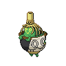 ヤバソチャ | Sinistcha | sinister（不吉な）がもとになっていると考えられている |
| 1014 | Okidogi | okie-dokie（オッケー）とdoggy（わんちゃん） | |
| 1015 | 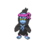 マシマシラ | Munkidori | monkey（サル）とhunky-dory（申し分ない） |
| 1016 | 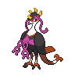 キチキギス | Fezandipiti | pheasant（キジ）とserendipity（偶然の幸運） |
| 1017 | Ogerpon | ogre（人食い鬼）、ponkan（ポンカン）とdekopon（デコポン） | |
| 1018 | 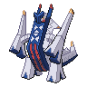 ブリジュラス | Archaludon | arch（アーチ）、Duraludon（ジュラルドン）とArchosaur（主竜類） |
| 1019 | 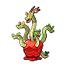 カミツオロチ | Hydrapple | Hydra（ギリシャ神話のヒュドラ）、dragon（ドラゴン）とapple（りんご） |
| 1021 | タケルライコ | Raging Bolt | フランス語の名前は「Ire-Foudre」で、ire（怒り）、foudre（稲妻）、thunderbolt)（雷）から作… |
| 1022 | Iron Boulder | ドイツ語の名前は「Eisenfels」で、Eisen（鉄）、Fels（岩）から作られている | |
| 1023 | テツノカシラ | Iron Crown | ドイツ語の名前は「Eisenhaupt」で、Eisen（鉄）、Haupt（「頭、かしら」の詩的な言い方）から作られている |
| 1024 | Terapagos | terrapin（淡水ガメ）とgalápagos（ガラパゴス） | |
| 1025 | Pecharunt | peach（モモ）、Pecha Berry（モモンのみ）、runt（ちび）とpetulant（すねた） |